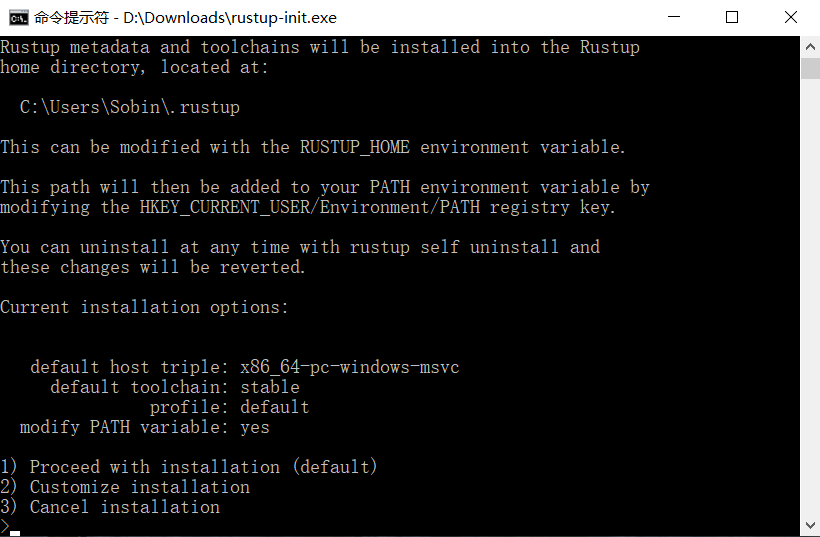
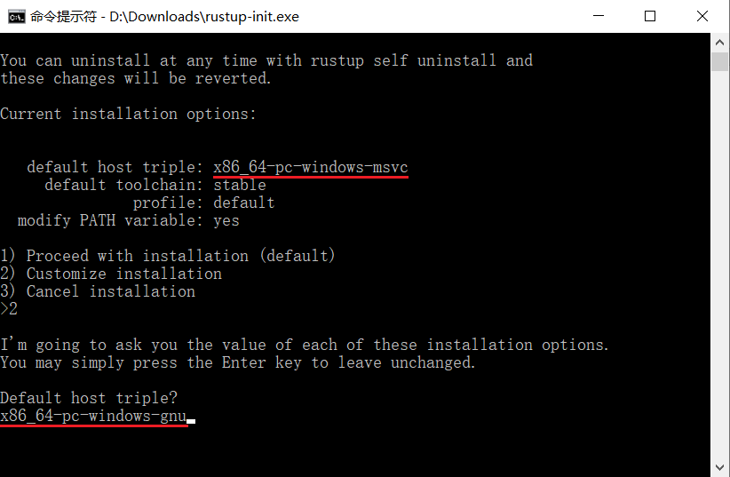
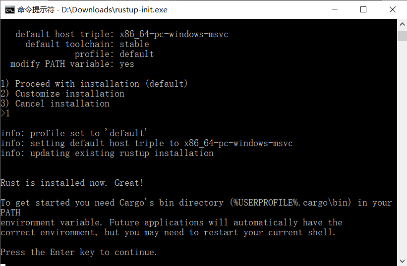
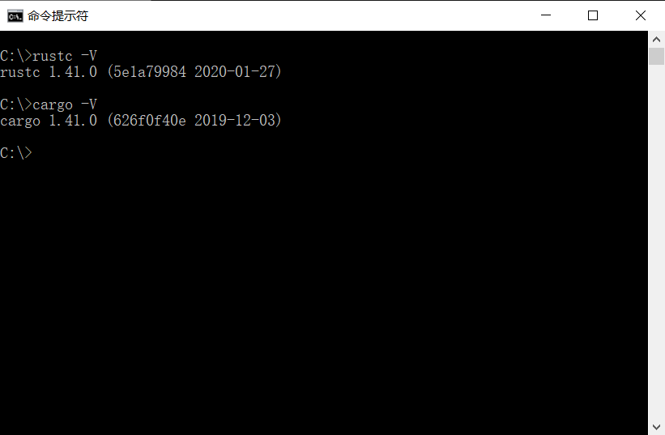
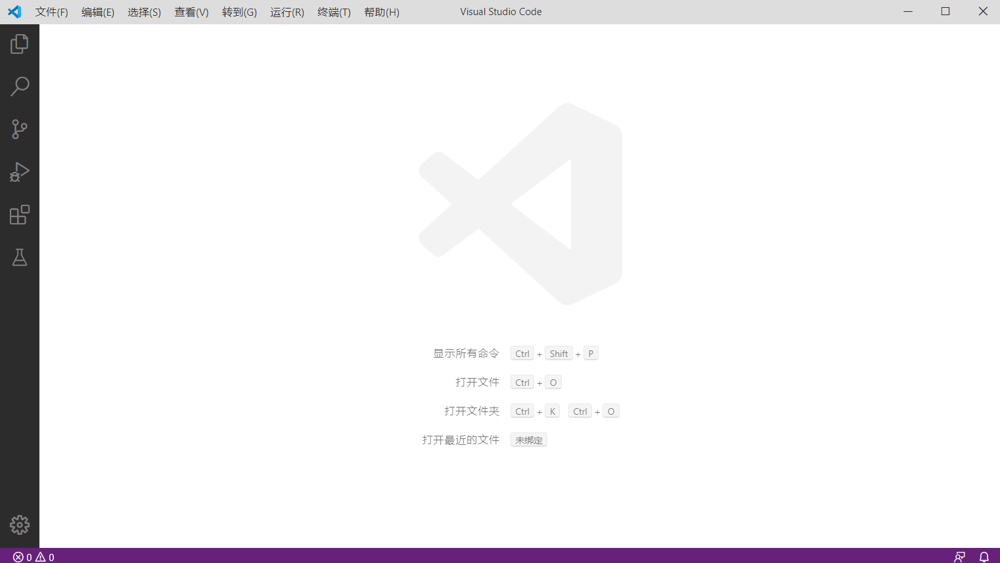
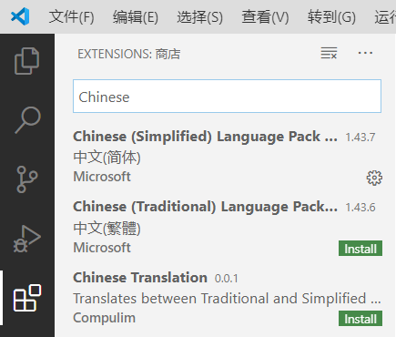
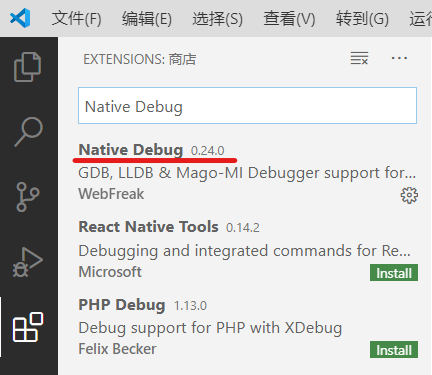
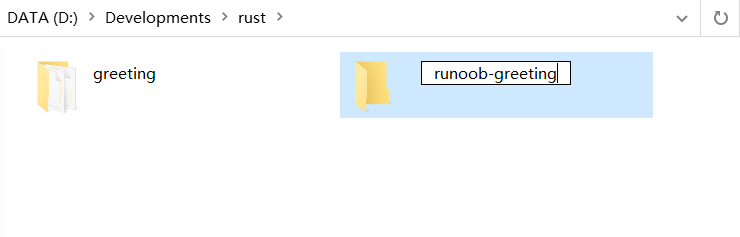
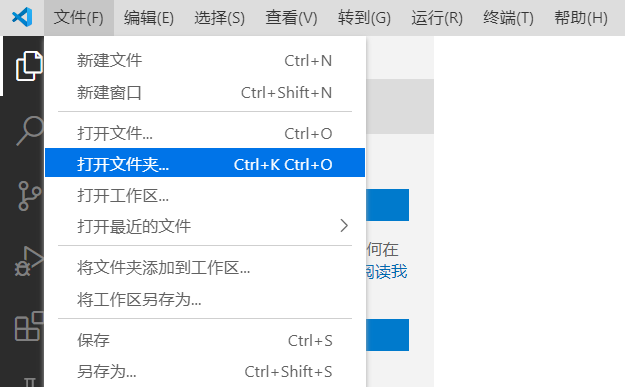
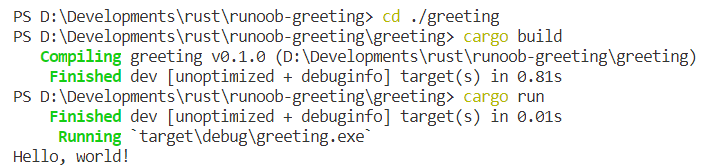

Rust環境構築
Rust は多くの統合開発環境（IDE）や開発専用のテキストエディタをサポートしています。
公式サイトがサポートを発表しているツールは以下の通りです（https://www.rust-lang.org/zh-CN/tools）：

本チュートリアルでは、開発環境として Visual Studio Code を使用します（Eclipse には Rust 開発専用のバージョンがあり、初心者にも良い選択肢です）。
注意：IntelliJ IDEA はプラグインをインストールしてもデバッグが難しいため、IDEA に慣れている開発者には CLion を推奨します。ただし、CLion は無料ではありません。
Visual Studio Code 開発環境の構築
まず、最新版の Rust コンパイラツールと Visual Studio Code をインストールする必要があります。
Rust コンパイラツール：https://www.rust-lang.org/zh-CN/tools/install
Visual Studio Code：https://code.visualstudio.com/Download
Rust のコンパイラツールは C 言語のコンパイラツールに依存しています。つまり、お使いのコンピュータには少なくとも 1 つの C 言語のコンパイル環境が存在している必要があります。Linux システムを使用している場合、通常は GCC または clang がすでに備わっています。macOS を使用している場合は、Xcode をインストールする必要があります。Windows OS を使用している場合は、MSVC を使用するために Visual Studio 2013 以降の環境（C/C++ サポートが必要）をインストールするか、MinGW + GCC コンパイル環境をインストールする必要があります（Cygwin はまだテストされていません）。
Rust コンパイラツールのインストール
Rust コンパイラツールは公式サイトからダウンロードできます：https://www.rust-lang.org/zh-CN/tools/install。
macOS、Linux、またはその他の Unix 系システムで Rustup をダウンロードして Rust をインストールするには、ターミナルで次のコマンドを実行してください：
curl --proto '=https' --tlsv1.2 -sSf https://sh.rustup.rs | sh
Windows では、ダウンロードするもの：rustup-init.exe実行可能ファイル。
ダウンロードした Rustup は Windows では実行可能プログラム rustup-init.exe です。
次に rustup-init ファイルを実行します：

上の図はコマンドラインのインストールウィザードです。
すでに MSVC をインストールしている場合（推奨）、インストールプロセスは非常に簡単です。「1」を入力して Enter キーを押すと、直接次のステップに進みます。。
MinGW をインストールしている場合は、「2」（カスタムインストール）を入力する必要があります。その後、システムが "Default host triple?" と尋ねます。上の図のdefault host triple"msvc" を "gnu" に変更してからインストーラに入力してください：

その他の属性はすべてデフォルトです。
すべてのオプションを設定すると、インストールウィザードの画面（最初の図）に戻ります。ここで「1」を入力して Enter キーを押すだけです。

このステップまで進めば Rust のインストールは完了です。次のコマンドでテストできます：
rustc -V # 注意的大写的 V

上記の 2 つのコマンドでインストールしたバージョン番号が出力されれば、インストールは成功です。
その他のダウンロード方法は以下を参照してください：https://forge.rust-lang.org/infra/other-installation-methods.html
Visual Studio Code 開発環境の構築
Visual Studio Code のインストールパッケージをダウンロードしたら、インストールウィザードを起動してインストールします（この手順についてはここでは詳しく説明しません）。
Visual Studio Code（以下 VSCode と略記）のインストールが完了したら、VSCode を実行します。

左のサイドバーで "Extensions" を見つけ、"Chinese" を検索して、簡体字中国語拡張機能をインストールし、インターフェースを中国語にします（英語のインターフェースを使用したい場合や、コンピュータが中国語の文字をサポートしていない場合は、この手順をスキップできます）。

同じ方法で rust-analyzer と Native Debug の 2 つの拡張機能もインストールします。


VSCode を再起動すると、Rust の開発環境が構築されます。
次に、サンプル-greeting のような新しいフォルダを作成します。

VSCode で作成したフォルダを開きます：

フォルダを開いたら、メニューバーの「ターミナル」-「新しいターミナル」を選択すると、新しいターミナルが開きます：

ターミナルで次のコマンドを入力します：
cargo new greeting
現在のフォルダの下に、greeting という名前の Rust プロジェクトディレクトリが作成されます。

次に、ターミナルで次の 3 つのコマンドを入力します：
cd ./greeting cargo build cargo run
システムはプロジェクト作成時に Hello, world のソースプログラム main.rs を生成します。これはコンパイルされて実行されます：

これで、Rust のコマンドラインプログラムを正常に構築できました！
VSCode でのプログラムのデバッグに関する詳細は、以下を参照してください：Cargo チュートリアル。
その他の拡張機能